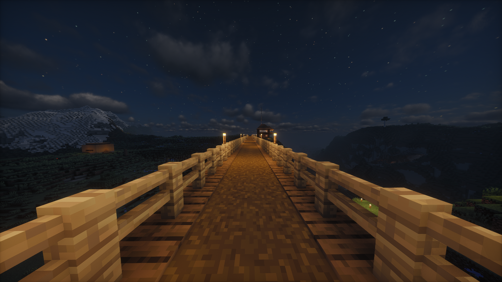

This article is about the spiritual successor to the original Horicraft server, to see its article, click here
Horicraft (2)
Horicraft (2) is a survival Minecraft server owned & operated by Horibyte founded on March 14 2025. It is the spiritual successor to the original Horicraft server after being closed due to a disagreement between the server hoster and Horibyte.
The server runs FabricMC as its base, and is self-hosted by Horibyte themselves.
Horibyte and Clyron are the first members of Horicraft (2), both joined shortly after the server was online for its first time, Horibyte’s YouTube channel has a video of both playing in the server in its early days.
Trivia
This section contains a list of Horicraft (2) trivia
- The server was originally gonna be hosted on another computer, before Horibyte’s parents disallowed them.
- The seed for the Horicraft (2) world is
theoneandonlycomet, referencing Horibyte’s OC (Original Character), Comet. - Horibyte’s house on the server is a direct remake of their Horicraft 1 house.
- Horicraft (2)’s motd is “Horicraft (2): the return of Dogui Heavy Industries and Cairo Company” and Horibyte’s title tag for the run-server-batch-script is “Run Horicraft (2): the return of Yoshito Hori”.
- So far, Cairo Company HQ has been built, DHI HQ is yet to be build on the world.
- In the Horiland lore, the world where Horicraft (2) takes place is the Starlight district of Fucking.
Gallery

A Horicraft (2) hill

A Horicraft (2) bridge going from Clyron's house to Horibyte's house
Pictures taken by Clyron.